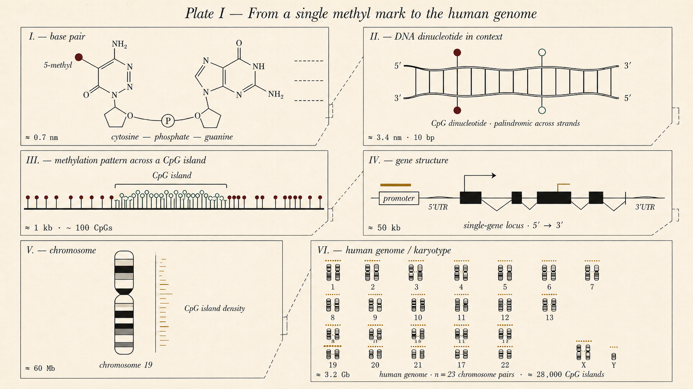
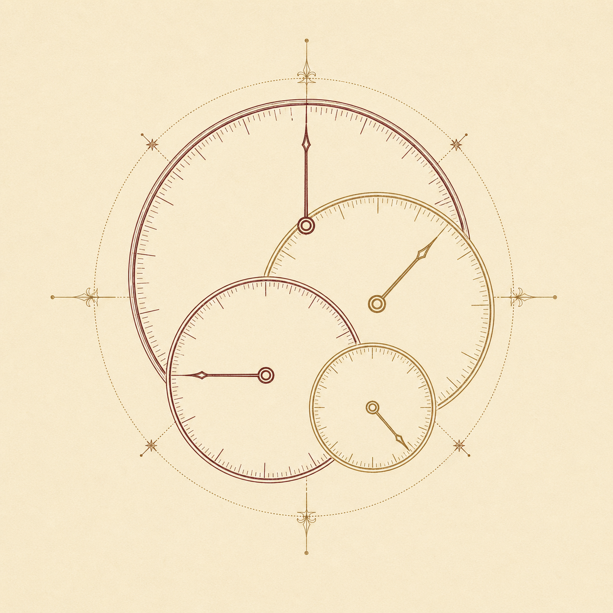
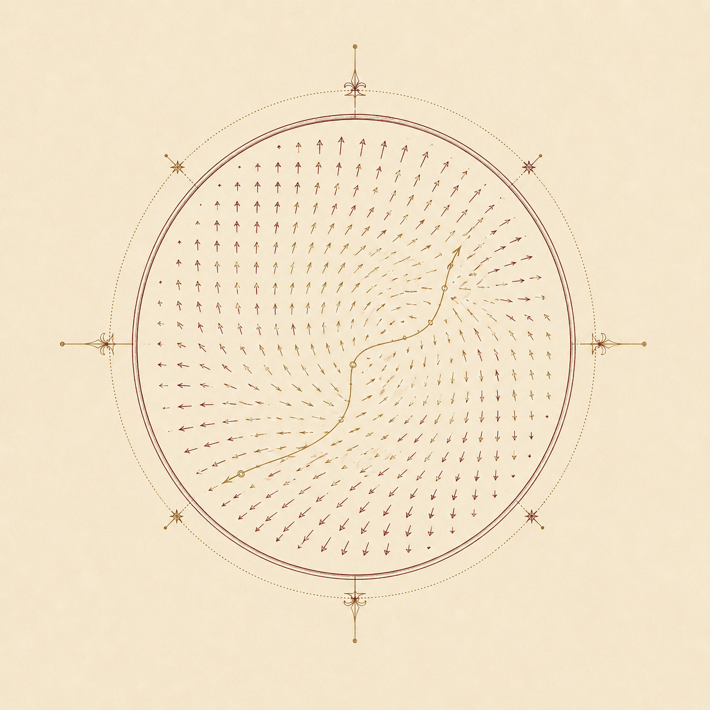
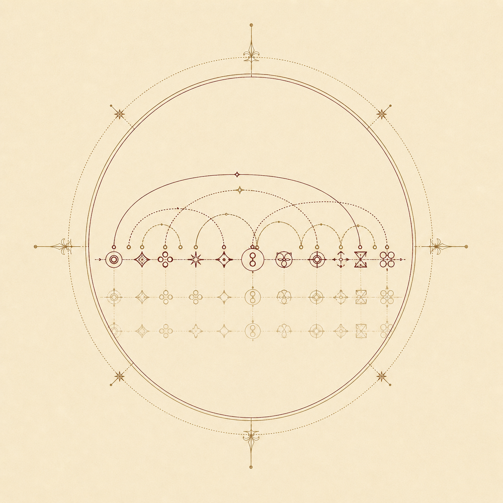
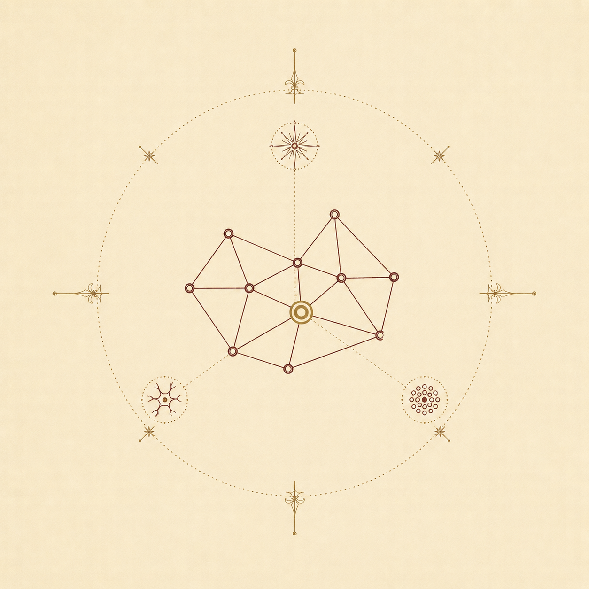

The Epylisian
Genome,
an AI-guided roadmap
to healthy epigenetic aging
Since the dawn of recorded thought, humanity has been quietly captivated by the idea of eternal life. Eternity is, perhaps, slightly too ambitious — but it remains worth asking how environment, choice, and chance reach down into our cells, and what allows some bodies to outlive others not only in years but in health.
An introduction, in a few breaths.
Ghent University · Scientific Researcher at UMC Amsterdam.
The Epylisian Genome began as a stubborn question, the kind that keeps surfacing through every conversation with a clinician and every paper on aging. Modern medicine has become very good at lengthening life, and noticeably worse at preserving health inside it — the gap between lifespan and healthspan keeps widening, and the cell-level reasons for it are still, in 2026, mostly unwritten.
The methylome — the soft, modifiable second layer of information riding on top of DNA — drifts with age in ways that anticipate disease decades before symptoms arrive. If we could read those drifts cleanly, the trajectory could be seen tilting before the body itself notices. The project sits at the seam between bio-engineering, mathematical modeling and modern AI, treating the methylome as a high-dimensional state space and asking what shape the path through it actually takes — where it accelerates, where it stalls, and what nudges a body from one valley of fates into another.
What is the epigenome, and what is the landscape it lives on?
Every cell in your body carries the same DNA, but reads it differently. A lung cell makes lung proteins; a neuron makes neuron proteins. The instructions for which genes are active and which are silent live above the sequence of bases, written in chemical marks attached to the DNA itself. That second layer of information is the epigenome.
The most studied of these marks is DNA methylation: a small methyl group fixed onto a cytosine — but only when that cytosine is followed by a guanine on the same strand. We call those positions CpG sites, for cytosine, phosphate, guanine. Roughly twenty-eight million of them are scattered across the human genome, and many flip between methylated and unmethylated as we age. (Plate I, right.)
In 1957 the embryologist Conrad Waddington drew a now-famous picture for what those marks do: a marble rolling down a hilly landscape, where each valley is a stable cell fate and the ridges between them are barriers the cell cannot easily cross. Waddington meant it as a metaphor for development — but it works just as well for aging. The landscape is the epigenome; the marble is a cell; gravity is time. (Plate II, right.)
Which valley a cell settles into, and how readily it crosses a ridge, depends on the slow accumulation of small chemical drifts on its surface — the very methyl marks shown in Plate I. The two plates are the same thing seen from different angles: one shows the marks; the other shows the terrain those marks shape.

![Plate II — the epigenetic landscape, after Waddington (1957). A 3D hilly terrain seen from a three-quarter elevated angle: a high plateau at the back representing the totipotent cell at birth; a central ridge that diverges into three primary valleys descending toward the foreground, each terminating in a basin holding a marble (a stable cell fate); smaller secondary valleys branching off; six tensile guy wires rising from beneath the terrain representing the genes pulling the topology into shape. A few burgundy and emerald methylation marks are scattered across the surface, tying the plate visually to Plate I.](plate-02-waddington-landscape.png)
An epigenetic landscape, lived once.
The marble is you, at birth. The hills and valleys are not your genome — that part is fixed — but your epigenome: the soft, modifiable terrain through which your body finds its long shape. Toggle environmental factors on and off as you go. Hover over the map to steer — the marble follows your cursor. Each life takes about a minute. The point is not to win. The point is to feel how the same starting marble, gently steered, ends up in very different places. After C.H. Waddington, The Strategy of the Genes (1957) — adapted for educational use.
The dissertation, in plain words.
"Understanding the Epigenetic Dynamics of Aging through Modeling and Machine Learning"
This dissertation is about reading those drifting marks. Using machine learning and stochastic models, it tries to map and model the complex chemical changes — and the rapid switches between them — that ripple across millions of CpG sites as a body moves through life. The marble in the simulation above is the metaphor; the methylation tables behind it are the data; the goal of the work is to build the math that turns one into the other.
Most lives end in a known set of pitfalls — the cardiovascular disease, cancers, neurodegeneration, frailty that crowd the late-life landscape. The methylome flips toward those valleys long before the symptoms arrive, and a careful enough model can see the trajectory tilting before the body itself has noticed. But there are also outliers: centenarians, the small minority of people who reach a hundred without major disease, whose methylomes look strikingly different from the cohort average. They have somehow walked the ridges instead of slipping into the valleys — and what their epigenetic signatures tell us about how a long, healthy life is biologically possible is the real animating question of this work.
Deeper insight comes from the place where modeling and biology meet. By combining longitudinal methylation data with ML-based epigenetic clocks, kinetic models of mark turnover, and the population-scale cohorts the existing literature has assembled, this dissertation aims to push past what the marks predict and toward why — what mechanisms keep certain CpG sites quiet across decades, and what lets a centenarian's epigenome sidestep the drifts that catch the rest of us. The hope, by the end, is to come away not only with sharper predictions but with sharper intuitions about where, on the landscape, a life can actually be steered from the steep valley back toward the ridge.
Current projects.
Dissecting the epigenetic clocks.
What, exactly, are the existing DNAm clocks measuring? This project takes Horvath, Hannum, PhenoAge and GrimAge apart, asking which CpGs each one leans on, where they agree, and where the predicted "age" diverges from biological reality.

EpiFlow: a flow model of the vector space of aging.
Treat the methylome as a high-dimensional manifold and learn the velocity field that pushes a body through it with time. A flow-matching network gives directional aging, not just an age number — and a way to see when a trajectory tips.

An unsupervised model of genomic grammar.
If a language model can learn syntax from text without ever being told the rules, what does the same apparatus learn from raw genomic sequence? The aim is to recover regulatory logic — promoters, enhancers, methylation context — without supervision.

The OMIM discovery pipeline.
A three-phase agentic system that takes an OMIM disease whose mechanism is still unknown and proposes a candidate gene plus a candidate mechanism — Personalized PageRank on a 1.8M-node biomedical knowledge graph, deep-investigation cross-checks across 10+ databases, and in-silico mechanism evaluation.

If our questions overlap.
Write to me, even just to compare notes.
A note is welcome from anyone working at the seam between aging biology, machine learning and modeling — fellow doctoral students, biologists curious about modern AI, modelers curious about biology, clinicians, or readers who simply find the question pulls at them.
compose →